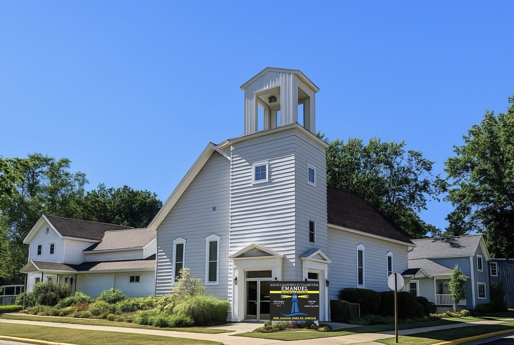

Estimados amigos nos alegra mucho que estén aquí en nuest. En la Iglesia Bautista Fundamental Emanuel, nuestro mayor deseo es predicar el evangelio de Jesucristo con claridad y amor.
Buscamos ser una comunidad donde la Biblia sea nuestra única regla de fe y conducta, y donde cada familia pueda encontrar un lugar para crecer espiritualmente.
¡Esperamos tener el privilegio de conocerlos pronto en uno de nuestros servicios!
Agenda una cita pastoralNuestra iglesia se basa en la palabra inerrante de Dios y la comunidad familiar.
Predicar el evangelio de Jesucristo a toda criatura, discipular a los creyentes para madurez espiritual y servir a nuestra comunidad con amor y verdad bíblica.
Hay un lugar para cada miembro de la familia para crecer en la palabra y el amor de Dios.
Clases dinámicas y seguras diseñadas para enseñar el amor de Dios adaptado a la edad.
Escuela Dominical - Domingos 10:00 AMUn espacio seguro y estimulante para que los jóvenes fortalezcan su fe y forjen amistades bíblicas.
Jueves 7:00 PM (Estudio)Discipulado, apoyo mutuo y comunión para crecer en todos los aspectos de la vida cristiana.
Servicios Principales y DiscipuladoNos encantaría conocerte. No dudes en visitarnos o contactarnos con cualquier pregunta.
(616) 123-4567 (Llamar o WhatsApp)
